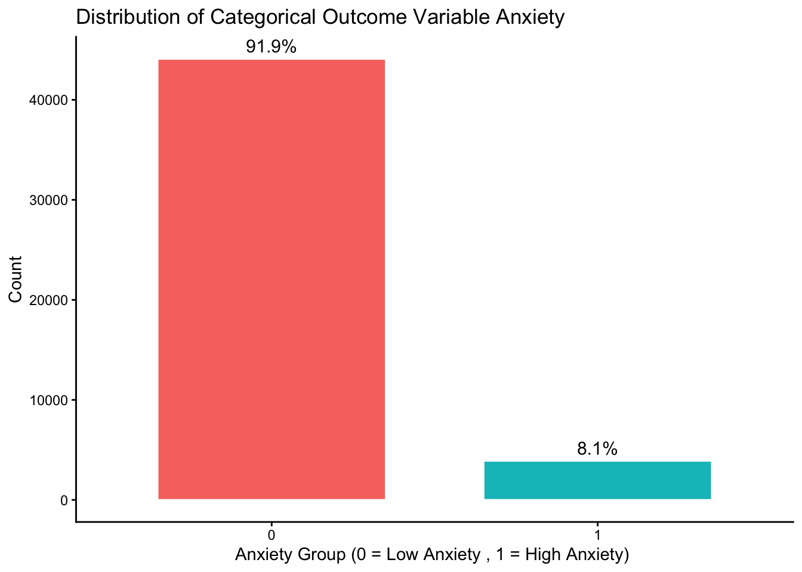
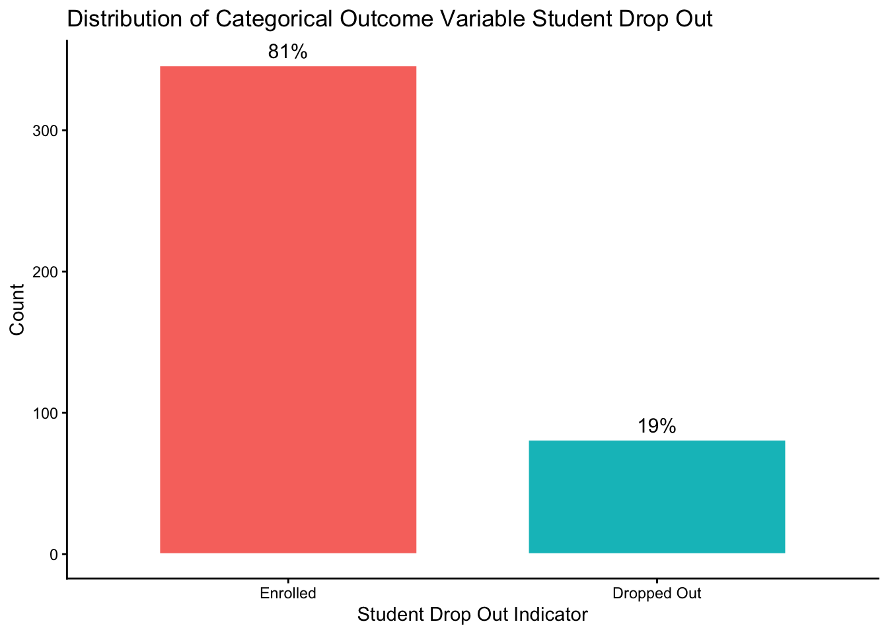
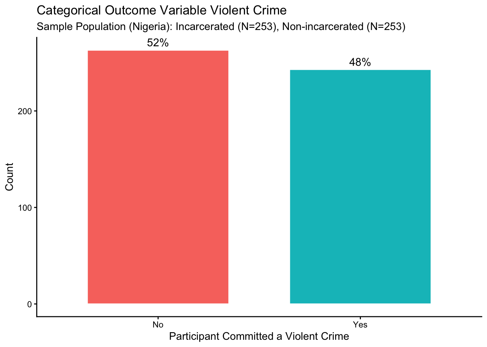

library(tidyverse)
library(here)
library(janitor)
library(report)
library(jtools)
library(sjPlot)
source("load_plot_functions.R")Week 9 - Logistic Regression
PSY 150
Load packages
Read in the Simulated data
teachr_data <- read_csv(here("data", "teachers_anx_covid_sim.csv")) %>%
mutate(across(c(occupation:occupation2), as.factor)) %>%
mutate(occupation = factor(occupation,
levels = c("teachers","healthcare","office","other")))Categorical outcome variable (anxiety):
0 = Low Anxiety (none / some of the time) 1 = High Anxiety (most / all of the time)
Categorical predictor (occupation2; factor with 2 levels):
0 = all other occupations 1 = teachers
Check the distribution of outcome variable & predictor variable:
tabyl(teachr_data$anxiety) teachr_data$anxiety n percent
0 44091 0.9185625
1 3909 0.0814375tabyl(teachr_data$occupation2) teachr_data$occupation2 n percent
all_others 36000 0.75
teachers 12000 0.25Plot the categorical outcome & view response proportions for each category:
bar_plot(
data = teachr_data,
x_var = anxiety,
x_label = "Anxiety Group (0 = Low Anxiety , 1 = High Anxiety) ",
title = "Distribution of Categorical Outcome Variable Anxiety "
)
Specifying a Logistic Regression model
model0 <- glm(anxiety ~ occupation2,
data = teachr_data, family = binomial())
summ(model0,
exp = TRUE, # Change to `FALSE` for Logit Estimates
model.fit = FALSE, digits = 3)| Observations | 48000 |
| Dependent variable | anxiety |
| Type | Generalized linear model |
| Family | binomial |
| Link | logit |
| exp(Est.) | 2.5% | 97.5% | z val. | p | |
|---|---|---|---|---|---|
| (Intercept) | 0.081 | 0.078 | 0.084 | -125.558 | 0.000 |
| occupation2teachers | 1.375 | 1.280 | 1.476 | 8.748 | 0.000 |
| Standard errors: MLE |
Why is the Odds Ratio labeled “exp(Est.)”
# To convert logistic regression coefficients estimated
# in the Log-Odds (Logits) to Odds Ratio (OR):
# EQUATION: OR = e^(logit_beta)
exp(0.318)[1] 1.374376Question: Why is the Odds Ratio labeled “exp(Est.)”
Response: __________________________________
How do we interpret the intercept?
- Convert the intercept (odds) to probability:
OR-to-Probability Equation: Probability = OR_intercept / (1 + OR_intercept)
- The intercept is then interpreted as the probability that Y = 1 predicted by the model when all predictors (Xs) are held at zero (or the reference group):
# The intercept probability =
0.081/(1+0.081)[1] 0.07493062Question: What is the interpretation of intercept for this model:
Response: __________________________________
How do we interpret the predictor?
- Convert the predictor (odds ratio) to percent change:
OR-to-Percent Equation: Percent Change = (OR-1)*100
- The predictor is then interpreted as the percent change in the odds of Y = 1 predicted by the model when the predictor X increases by 1 (or for the non-reference group relative to reference group):
# Predictor (percent change in the odds) =
(1.375-1)*100[1] 37.5Question: What is the interpretation of predictor for this model:
Response: __________________________________
Forward Stepwise Regression:
Compare models after adding additional predictors:
- Start with focal predictor only and estimate model (
Step 1 Model) - Estimate a new model(
Step 2 Model) with the addition of a control variable - Compare
Step 1 Modelmodel toStep 2 Model - Add an additional control to the
Step 2 Modeland estimateStep 3 Model… - Repeat (2-3): Add additional control variables to previously fitted model. Test all potentially relevant control variables.
Is the predictor variable continuous or categorical?
tabyl(teachr_data$occupation) teachr_data$occupation n percent
teachers 12000 0.25
healthcare 12000 0.25
office 12000 0.25
other 12000 0.25Categorical predictor (occupation; factor with 4 levels):
0 = teachers 1 = healthcare 2 = office 3 = other
Fit the step-1 model (focal predictor only):
mstep1 <- glm(anxiety ~ occupation,
data = teachr_data, family = binomial())
summ(mstep1, exp = TRUE, model.fit = FALSE, digits = 3)| Observations | 48000 |
| Dependent variable | anxiety |
| Type | Generalized linear model |
| Family | binomial |
| Link | logit |
| exp(Est.) | 2.5% | 97.5% | z val. | p | |
|---|---|---|---|---|---|
| (Intercept) | 0.112 | 0.105 | 0.118 | -72.190 | 0.000 |
| occupationhealthcare | 0.693 | 0.633 | 0.760 | -7.858 | 0.000 |
| occupationoffice | 0.757 | 0.692 | 0.828 | -6.101 | 0.000 |
| occupationother | 0.732 | 0.669 | 0.802 | -6.769 | 0.000 |
| Standard errors: MLE |
Fit the step-2 model (add control predictor gender):
mstep2 <- glm(anxiety ~ occupation + gender,
data = teachr_data, family = binomial())
summ(mstep2, exp = TRUE, model.fit = FALSE, digits = 3)| Observations | 48000 |
| Dependent variable | anxiety |
| Type | Generalized linear model |
| Family | binomial |
| Link | logit |
| exp(Est.) | 2.5% | 97.5% | z val. | p | |
|---|---|---|---|---|---|
| (Intercept) | 0.119 | 0.112 | 0.127 | -65.657 | 0.000 |
| occupationhealthcare | 0.692 | 0.631 | 0.758 | -7.905 | 0.000 |
| occupationoffice | 0.758 | 0.693 | 0.829 | -6.068 | 0.000 |
| occupationother | 0.733 | 0.670 | 0.802 | -6.751 | 0.000 |
| gendermale | 0.823 | 0.767 | 0.883 | -5.407 | 0.000 |
| Standard errors: MLE |
Fit the step-3 model (add control predictor age_band):
mstep3 <- glm(anxiety ~ occupation + gender + age_band,
data = teachr_data, family = binomial())
summ(mstep3, exp = TRUE, model.fit = FALSE, digits = 3)| Observations | 48000 |
| Dependent variable | anxiety |
| Type | Generalized linear model |
| Family | binomial |
| Link | logit |
| exp(Est.) | 2.5% | 97.5% | z val. | p | |
|---|---|---|---|---|---|
| (Intercept) | 0.172 | 0.150 | 0.197 | -24.998 | 0.000 |
| occupationhealthcare | 0.693 | 0.632 | 0.760 | -7.841 | 0.000 |
| occupationoffice | 0.760 | 0.695 | 0.831 | -5.994 | 0.000 |
| occupationother | 0.736 | 0.672 | 0.805 | -6.651 | 0.000 |
| gendermale | 0.824 | 0.768 | 0.884 | -5.358 | 0.000 |
| age_band25-34 | 0.928 | 0.803 | 1.071 | -1.026 | 0.305 |
| age_band35-44 | 0.818 | 0.711 | 0.942 | -2.788 | 0.005 |
| age_band45-54 | 0.619 | 0.536 | 0.715 | -6.502 | 0.000 |
| age_band55-64 | 0.523 | 0.449 | 0.608 | -8.420 | 0.000 |
| age_band65+ | 0.319 | 0.261 | 0.389 | -11.242 | 0.000 |
| Standard errors: MLE |
City College Persistence (Predicting dropout)
Data was simulated to approximately replicate findings from study:
Nakajima et al. (2012): “Student Persistence in Community Colleges”
Read in the simulated city college persistence data:
cc_data <- read_csv(here("data", "city_college_persistence_sim.csv")) %>%
mutate(across(c(gender, race, financial_aid), as.factor)) %>%
mutate(dropped_out = factor(dropped_out, labels = c("Enrolled","Dropped Out")) )Plot the categorical outcome & view response proportions for each category:
bar_plot(
data = cc_data,
x_var = dropped_out,
x_label = "Student Drop Out Indicator",
title = "Distribution of Categorical Outcome Variable Student Drop Out"
)
Logistic Regression with a Continuous Predictor
mstep0_demo <- glm(dropped_out ~ faculty_interaction,
data = cc_data, family = binomial())
summ(mstep0_demo, exp = TRUE, model.fit = FALSE, model.info = FALSE, digits = 3)| exp(Est.) | 2.5% | 97.5% | z val. | p | |
|---|---|---|---|---|---|
| (Intercept) | 0.428 | 0.171 | 1.072 | -1.812 | 0.070 |
| faculty_interaction | 0.831 | 0.631 | 1.094 | -1.322 | 0.186 |
| Standard errors: MLE |
In logistic regression, the change in odds is multiplicative, not additive:
Equation (Take the OR estimate to the power of X): OR_BETA^(X)
How much does the model predict the odds of dropping out changes when faculty_interaction changes from 1 to 3?
Calculate predictor as percent change when faculty_interaction = 1:
Response: _______16.9% lower odds of dropping out ________
Calculate predictor as percent change when faculty_interaction = 3:
Response: _________42.6% lower odds of dropping out_____
GROUP 1: Estimate the regression of the outcome predicted by focal predictor
Instructions:
- Estimate the following logistic regression model:
dropped_out = ⍺ + β(offcampus_work_hours)
- Convert the intercept from Odds-Ratio (OR) to probability and interpret:
OR-to-Probability Equation: Probability = OR_intercept / (1 + OR_intercept)
- Interpret the Odds Ratio of the predictor
offcampus_work_hoursas percent change
OR-to-Percent-Change Equation: Percent Change = (1 - OR)*100
- Is the predictor estimate for
offcampus_work_hourssignificant?
mstep1_persist <- glm(dropped_out ~ offcampus_work_hours,
data = cc_data, family = binomial())
summ(mstep1_persist, exp = TRUE, model.fit = FALSE, model.info = FALSE, digits = 3)| exp(Est.) | 2.5% | 97.5% | z val. | p | |
|---|---|---|---|---|---|
| (Intercept) | 0.120 | 0.074 | 0.196 | -8.555 | 0.000 |
| offcampus_work_hours | 1.027 | 1.011 | 1.044 | 3.357 | 0.001 |
| Standard errors: MLE |
Interpretation of intercept (probability):
Response: _______________________
Interpretation of focal predictor offcampus_work_hours:
Response: _______________________
Significance of predictor estimate:
Response: _______________________
GROUP 2: Add the control variable cumulative_gpa to the model
Instructions:
- Estimate the following logistic regression model:
dropped_out = ⍺ + β1(offcampus_work_hours) + β2(cumulative_gpa)
- Interpret the Odds Ratio of the predictor
cumulative_gpaas percent change
OR-to-Percent-Change Equation: Percent Change = (1 - OR)*100
Is the predictor estimate for
cumulative_gpasignificant?How did the addition of the control variable to the model affect the focal predictor est/sig?
mstep2_persist <- glm(dropped_out ~
offcampus_work_hours +
cumulative_gpa,
data = cc_data, family = binomial())
summ(mstep2_persist, exp = TRUE, model.fit = FALSE, model.info = FALSE, digits = 3)| exp(Est.) | 2.5% | 97.5% | z val. | p | |
|---|---|---|---|---|---|
| (Intercept) | 14.808 | 4.856 | 45.151 | 4.738 | 0.000 |
| offcampus_work_hours | 1.042 | 1.022 | 1.062 | 4.199 | 0.000 |
| cumulative_gpa | 0.027 | 0.012 | 0.064 | -8.335 | 0.000 |
| Standard errors: MLE |
Interpretation of control predictor cumulative_gpa:
Response: _______________________
Significance of predictor estimate:
Response: _______________________
How did the addition of the control variable to the model affect the focal predictor est/sig?
Response: _______________________
GROUP 3: Add the control variable enrollment_units to the model
Instructions:
- Estimate the following logistic regression model:
dropped_out = ⍺ + β1(offcampus_work_hours) + β2(cumulative_gpa) + β3(enrollment_units)
- Interpret the Odds Ratio of the predictor
enrollment_unitsas percent change
OR-to-Percent-Change Equation: Percent Change = (1 - OR)*100
Is the predictor estimate for
enrollment_unitssignificant?How did the addition of the control variable to the model affect the focal predictor est/sig?
mstep3_persist <- glm(dropped_out ~
offcampus_work_hours +
cumulative_gpa +
enrollment_units,
data = cc_data, family = binomial())
summ(mstep3_persist, exp = TRUE, model.fit = FALSE, model.info = FALSE, digits = 3)| exp(Est.) | 2.5% | 97.5% | z val. | p | |
|---|---|---|---|---|---|
| (Intercept) | 12.962 | 3.661 | 45.890 | 3.972 | 0.000 |
| offcampus_work_hours | 1.042 | 1.022 | 1.063 | 4.213 | 0.000 |
| cumulative_gpa | 0.027 | 0.011 | 0.063 | -8.313 | 0.000 |
| enrollment_units | 1.015 | 0.947 | 1.088 | 0.431 | 0.666 |
| Standard errors: MLE |
Interpretation of control predictor enrollment_units:
Response: _______________________
Significance of predictor estimate:
Response: _______________________
How did the addition of the control variable to the model affect the focal predictor est/sig?
Response: _______________________
GROUP 4: Add the control variable financial_aid to the model
Instructions:
- Estimate the following logistic regression model:
dropped_out = ⍺ + β1(offcampus_work_hours) + β2(cumulative_gpa) + β3(enrollment_units) + β4(financial_aid)
- Interpret the Odds Ratio of the predictor
financial_aidas percent change
OR-to-Percent-Change Equation: Percent Change = (1 - OR)*100
Is the predictor estimate for
financial_aidsignificant?How did the addition of the control variable to the model affect the focal predictor est/sig?
mstep4_persist <- glm(dropped_out ~
offcampus_work_hours +
cumulative_gpa +
enrollment_units +
financial_aid,
data = cc_data, family = binomial())
summ(mstep4_persist, exp = TRUE, model.fit = FALSE, model.info = FALSE, digits = 3)| exp(Est.) | 2.5% | 97.5% | z val. | p | |
|---|---|---|---|---|---|
| (Intercept) | 17.269 | 4.478 | 66.598 | 4.137 | 0.000 |
| offcampus_work_hours | 1.044 | 1.024 | 1.065 | 4.339 | 0.000 |
| cumulative_gpa | 0.026 | 0.011 | 0.061 | -8.267 | 0.000 |
| enrollment_units | 1.011 | 0.943 | 1.084 | 0.308 | 0.758 |
| financial_aid1 | 0.669 | 0.365 | 1.227 | -1.299 | 0.194 |
| Standard errors: MLE |
Interpretation of control predictor financial_aid:
Response: _______________________
Significance of predictor estimate:
Response: _______________________
How did the addition of the control variable to the model affect the focal predictor est/sig?
Response: _______________________
Do Adverse Childhood Experiences (ACEs) increase likelihood of commiting a violent crime?
Data was simulated to approximately replicate findings from study:
Kazeem et al., 2020: Study Population (Nigeria): Incarcerated (N=253), Non-incarcerated (N=253)
Read in the simulated data & specify factors (& factor levels) of categorical variables:
ace_data <- read_csv(here("data", "ACEs_violent_crime_SIM.csv")) |>
mutate(
group = factor(group, levels = c("non_incarcerated","incarcerated")),
sex = factor(sex),
education_level = factor(education_level,
levels = c("no_school","<primary","primary","secondary","college","postgrad"))) %>%
mutate(violent_crime = factor(violent_crime, labels = c("No", "Yes"))) %>%
select(violent_crime, ace_family_env, ace_peer_violence, ace_community_violence,
ace_war_exposure, ses_low, age, education_level, sex, ethnicity)Plot the categorical outcome & view response proportions for each category:
bar_plot(
data = ace_data,
x_var = violent_crime,
x_label = "Participant Committed a Violent Crime",
title = "Categorical Outcome Variable Violent Crime") +
labs(subtitle = "Sample Population (Nigeria): Incarcerated (N=253), Non-incarcerated (N=253)")
GROUP 5: Estimate the regression of the outcome predicted by focal predictor
Instructions:
- Estimate the following logistic regression model:
violent_crime = ⍺ + β1(ace_family_env)
- Convert the intercept from Odds-Ratio (OR) to probability and interpret:
OR-to-Probability Equation: Probability = OR_intercept / (1 + OR_intercept)
- Interpret the Odds Ratio of the predictor
ace_family_envas percent change
OR-to-Percent-Change Equation: Percent Change = (1 - OR)*100
- Is the predictor estimate for
ace_family_envsignificant?
mstep1_aces <- glm(
violent_crime ~ ace_family_env,
data = ace_data,
family = binomial())
summ(mstep1_aces, exp = TRUE, model.fit = FALSE, model.info = FALSE, digits = 3)| exp(Est.) | 2.5% | 97.5% | z val. | p | |
|---|---|---|---|---|---|
| (Intercept) | 0.099 | 0.063 | 0.157 | -9.853 | 0.000 |
| ace_family_env | 3.225 | 2.589 | 4.017 | 10.448 | 0.000 |
| Standard errors: MLE |
Interpretation of intercept (probability):
Response: _______________________
Interpretation of focal predictor:
Response: _______________________
Significance of predictor estimate:
Response: _______________________
GROUP 6: Add the control variable ace_peer_violence to the model
Instructions:
- Estimate the following logistic regression model:
violent_crime = ⍺ + β1(ace_family_env) + β2(ace_peer_violence)
- Interpret the Odds Ratio of the predictor
ace_peer_violenceas percent change
OR-to-Percent-Change Equation: Percent Change = (1 - OR)*100
Is the predictor estimate for
ace_peer_violencesignificant?How did the addition of the control variable to the model affect the focal predictor est/sig?
mstep2_aces <- glm(
violent_crime ~ ace_family_env + ace_peer_violence,
data = ace_data,
family = binomial())
summ(mstep2_aces, exp = TRUE, model.fit = FALSE, model.info = FALSE, digits = 3)| exp(Est.) | 2.5% | 97.5% | z val. | p | |
|---|---|---|---|---|---|
| (Intercept) | 0.005 | 0.002 | 0.011 | -11.531 | 0.000 |
| ace_family_env | 3.138 | 2.363 | 4.168 | 7.901 | 0.000 |
| ace_peer_violence | 2.432 | 2.053 | 2.881 | 10.282 | 0.000 |
| Standard errors: MLE |
Interpretation of control predictor:
Response: _______________________
Significance of predictor estimate:
Response: _______________________
How did the addition of the control variable to the model affect the focal predictor est/sig?
Response: _______________________
GROUP 7: Add the control variable ace_community_violence to the model
Instructions:
- Estimate the following logistic regression model:
violent_crime = ⍺ + β1(ace_family_env) + β2(ace_peer_violence) + β3(ace_community_violence)
- Interpret the Odds Ratio of the predictor
ace_community_violenceas percent change
OR-to-Percent-Change Equation: Percent Change = (1 - OR)*100
- Is the predictor estimate for
ace_community_violencesignificant?
mstep3_aces <- glm(
violent_crime ~
ace_family_env + ace_peer_violence + ace_community_violence,
data = ace_data,
family = binomial())
summ(mstep3_aces, exp = TRUE, model.fit = FALSE, model.info = FALSE, digits = 3)| exp(Est.) | 2.5% | 97.5% | z val. | p | |
|---|---|---|---|---|---|
| (Intercept) | 0.002 | 0.001 | 0.005 | -11.489 | 0.000 |
| ace_family_env | 2.968 | 2.208 | 3.991 | 7.203 | 0.000 |
| ace_peer_violence | 2.338 | 1.958 | 2.792 | 9.375 | 0.000 |
| ace_community_violence | 1.702 | 1.411 | 2.053 | 5.556 | 0.000 |
| Standard errors: MLE |
Interpretation of control predictor:
Response: _______________________
Significance of predictor estimate:
Response: _______________________
GROUP 8: Add the control variable ace_war_exposure to the model
Instructions:
- Estimate the following logistic regression model:
violent_crime = ⍺ + β1(ace_family_env) + β2(ace_peer_violence) + β3(ace_community_violence) + β4(ace_war_exposure)
- Interpret the Odds Ratio of the predictor
ace_war_exposureas percent change
OR-to-Percent-Change Equation: Percent Change = (1 - OR)*100
- Is the predictor estimate for
ace_war_exposuresignificant?
mstep4_aces <- glm(
violent_crime ~
ace_family_env + ace_peer_violence + ace_community_violence + ace_war_exposure,
data = ace_data,
family = binomial())
summ(mstep4_aces, exp = TRUE, model.fit = FALSE, model.info = FALSE, digits = 3)| exp(Est.) | 2.5% | 97.5% | z val. | p | |
|---|---|---|---|---|---|
| (Intercept) | 0.001 | 0.000 | 0.003 | -10.392 | 0.000 |
| ace_family_env | 2.520 | 1.739 | 3.652 | 4.882 | 0.000 |
| ace_peer_violence | 1.894 | 1.536 | 2.335 | 5.982 | 0.000 |
| ace_community_violence | 1.348 | 1.064 | 1.709 | 2.471 | 0.013 |
| ace_war_exposure | 3.196 | 2.355 | 4.337 | 7.460 | 0.000 |
| Standard errors: MLE |
Interpretation of control predictor:
Response: _______________________
Significance of predictor estimate:
Response: _______________________
GROUP 9: Add the control variable ses_low to the model
Instructions:
- Estimate the following logistic regression model:
violent_crime = ⍺ + β1(ace_family_env) + β2(ace_peer_violence) + β3(ace_community_violence) + β4(ace_war_exposure) + β5(ses_low)
- Interpret the Odds Ratio of the predictor
ses_lowas percent change
OR-to-Percent-Change Equation: Percent Change = (1 - OR)*100
- Is the predictor estimate for
ses_lowsignificant?
mstep5_aces <- glm(
violent_crime ~
ace_family_env + ace_peer_violence + ace_community_violence + ace_war_exposure +
ses_low,
data = ace_data,
family = binomial())
summ(mstep5_aces, exp = TRUE, model.fit = FALSE, model.info = FALSE, digits = 3)| exp(Est.) | 2.5% | 97.5% | z val. | p | |
|---|---|---|---|---|---|
| (Intercept) | 0.000 | 0.000 | 0.001 | -9.779 | 0.000 |
| ace_family_env | 2.572 | 1.747 | 3.788 | 4.784 | 0.000 |
| ace_peer_violence | 1.976 | 1.573 | 2.483 | 5.847 | 0.000 |
| ace_community_violence | 1.292 | 1.010 | 1.652 | 2.042 | 0.041 |
| ace_war_exposure | 2.818 | 2.071 | 3.834 | 6.597 | 0.000 |
| ses_low | 6.512 | 2.585 | 16.406 | 3.975 | 0.000 |
| Standard errors: MLE |
Interpretation of control predictor:
Response: _______________________
Significance of predictor estimate:
Response: _______________________
GROUP 10: Add the control variable sex to the model
Instructions:
- Estimate the following logistic regression model:
violent_crime = ⍺ + β1(ace_family_env) + β2(ace_peer_violence) + β3(ace_community_violence) + β4(ace_war_exposure) + β5(ses_low) + β6(sex)
- Interpret the Odds Ratio of the predictor
sexas percent change
OR-to-Percent-Change Equation: Percent Change = (1 - OR)*100
- Is the predictor estimate for
sexsignificant?
mstep6_aces <- glm(
violent_crime ~
ace_family_env + ace_peer_violence + ace_community_violence + ace_war_exposure +
ses_low +
sex,
data = ace_data,
family = binomial())
summ(mstep6_aces, exp = TRUE, model.fit = FALSE, model.info = FALSE, digits = 3)| exp(Est.) | 2.5% | 97.5% | z val. | p | |
|---|---|---|---|---|---|
| (Intercept) | 0.000 | 0.000 | 0.001 | -9.470 | 0.000 |
| ace_family_env | 2.536 | 1.702 | 3.777 | 4.574 | 0.000 |
| ace_peer_violence | 1.902 | 1.518 | 2.382 | 5.591 | 0.000 |
| ace_community_violence | 1.288 | 1.001 | 1.659 | 1.966 | 0.049 |
| ace_war_exposure | 2.899 | 2.112 | 3.980 | 6.582 | 0.000 |
| ses_low | 5.986 | 2.357 | 15.202 | 3.763 | 0.000 |
| sexmale | 3.672 | 1.419 | 9.505 | 2.681 | 0.007 |
| Standard errors: MLE |
Interpretation of control predictor:
Response: _______________________
Significance of predictor estimate:
Response: _______________________